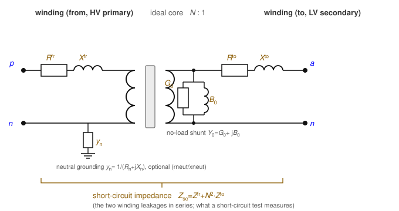
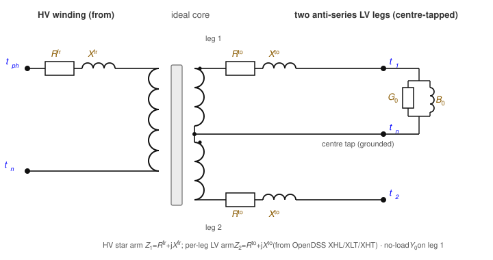
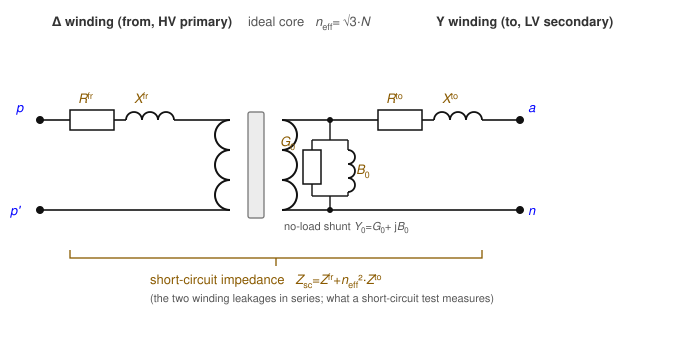
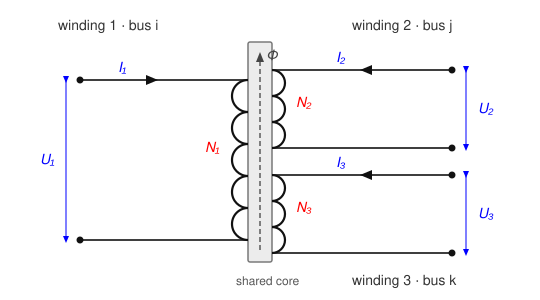
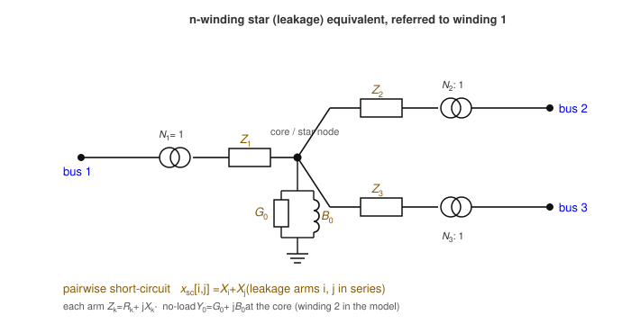

Transformers
A transformer couples two buses through galvanically isolated windings — primary and secondary share no conductor, only magnetic flux. (Step-voltage regulators, where the windings do share a node, are a separate element; see Regulators.) Because the winding topologies differ qualitatively, each configuration is a distinct data-model object: single_phase, center_tap, wye_delta, delta_wye, and the general n_winding. Every model is built from an idealised winding pair plus three loss components. Parts 1–5 state the foundational model; part 6 records the realisation. Symbols are defined in Notation.
In the literature and in tools, a winding (and an n-winding transformer) usually counts the number of buses / voltage levels the transformer connects — its ports — not the number of physical coils. For a single-phase transformer the two coincide: a two-winding single-phase unit has two coils and two ports. For a three-phase transformer they do not: a three-phase two-winding transformer has six physical coils (three per side) yet is still called "two-winding". Throughout this specification "winding" means a port — one bus connection at one voltage level — and each winding comprises n_phase physical coils. The n_winding object's windings array lists these ports (each with its own bus), so n is the number of buses, and per phase there are n coils on the shared core.
1. Data model
Each subtype is an entry under transformer.<subtype>, keyed by its string ID $x$. Common fields (two-winding subtypes):
| Field | Type | Unit | Req. | Description |
|---|---|---|---|---|
bus_from, bus_to | string | – | ✔ | Endpoint bus IDs $i$, $j$ |
terminal_map_from, terminal_map_to | string[] | – | ✔ | Conductor→terminal maps (lengths per subtype) |
v_nom_from, v_nom_to | number | V | ✔ | Reference winding voltages — set the turns ratio |
s_rating | number | VA | ✔ | Nameplate apparent-power rating |
r_series_from, x_series_from | number | Ω | From-winding series leakage | |
r_series_to, x_series_to | number | Ω | To-winding series leakage | |
g_no_load, b_no_load | number | S | No-load (core-loss / magnetising) shunt | |
r_neutral_from/_to, x_neutral_from/_to | number | Ω | Winding-neutral grounding impedance (OpenDSS rneut/xneut) | |
tap, tap_min, tap_max | number | – | From-side tap multiplier; a free OPF variable when tap_min < tap_max | |
i_max_from, i_max_to | number[] | A | Per-conductor current limits |
Terminal-map lengths: single_phase 2 + 2; center_tap 2 (from) + 3 (to); wye_delta 4 (wye) + 3 (delta); delta_wye 3 (delta) + 4 (wye). The n_winding object instead carries a windings array (each with bus, terminal_map, v_nom, configuration, r_winding, optional delta_roll, i_max) and pairwise short-circuit reactances x_sc keyed "i_j".
2. Input symbols
| Field | Symbol | Notes |
|---|---|---|
v_nom_from, v_nom_to | $\textcolor{red}{U^{\text{ref}}_i},\ \textcolor{red}{U^{\text{ref}}_j}$ | turns ratio $\textcolor{red}{N}=\textcolor{red}{U^{\text{ref}}_i}/\textcolor{red}{U^{\text{ref}}_j}$ |
r/x_series_from | $\textcolor{brown}{Z^{\text{fr}}_x}=\textcolor{red}{R^{\text{fr}}_x}+\textcolor{brown}{j}\textcolor{red}{X^{\text{fr}}_x}$ | from-winding leakage |
r/x_series_to | $\textcolor{brown}{Z^{\text{to}}_x}=\textcolor{red}{R^{\text{to}}_x}+\textcolor{brown}{j}\textcolor{red}{X^{\text{to}}_x}$ | to-winding leakage |
g/b_no_load | $\textcolor{brown}{Y_0}=\textcolor{red}{G_0}+\textcolor{brown}{j}\textcolor{red}{B_0}$ | magnetising shunt |
r/x_neutral_* | $\textcolor{brown}{y_n}=1/(\textcolor{red}{R_n}+\textcolor{brown}{j}\textcolor{red}{X_n})$ | neutral grounding |
tap | $\textcolor{red}{\tau}$ (fixed) or $\tau$ (variable) | $\textcolor{red}{N}_{\text{eff}}=\textcolor{red}{N}\,\tau$ |
s_rating | $\textcolor{red}{S^{\max}_x}$ | nameplate |
3. Variables
Each winding conductor $k$ on side $\sigma\in\{\text{fr},\text{to}\}$ carries a complex winding current $\textcolor{blue}{I_{x,\sigma,k}}$. For the winding spanning terminal pair $(p_k,q_k)$ on bus $b^\sigma$, write the winding voltage
\[\textcolor{blue}{V^{\sigma}_{x,k}} = \textcolor{blue}{U_{b^\sigma,p_k}} - \textcolor{blue}{U_{b^\sigma,q_k}}\]
(phase-to-neutral for a wye winding, line-to-line for a delta winding, with $\textcolor{blue}{U}=0$ when $q_k$ is absent/ground). When the tap is free, the ratio $\textcolor{red}{N}_{\text{eff}}$ becomes a decision variable.
4. Equality constraints
The idealised winding pair
Every transformer is built from ideal winding pairs obeying flux linkage, complex- power conservation, and winding KCL. With winding EMFs $\textcolor{blue}{E^{\text{fr}}_x},\textcolor{blue}{E^{\text{to}}_x}$ and the reference voltages standing in for the turns ratio:

\[\frac{\textcolor{blue}{E^{\text{fr}}_x}}{\textcolor{red}{U^{\text{ref}}_i}} = \frac{\textcolor{blue}{E^{\text{to}}_x}}{\textcolor{red}{U^{\text{ref}}_j}}, \qquad \textcolor{red}{U^{\text{ref}}_i}\,\textcolor{blue}{I_{x,\text{fr}}} + \textcolor{red}{U^{\text{ref}}_j}\,\textcolor{blue}{I_{x,\text{to}}} = 0 \ \Longleftrightarrow\ \textcolor{red}{N}_{\text{eff}}\,\textcolor{blue}{I_{x,\text{fr}}} + \textcolor{blue}{I_{x,\text{to}}} = 0.\]
The second relation is the ampere-turn balance; with all losses removed the EMF is the terminal voltage and $\textcolor{blue}{V^{\text{fr}}_x} = \textcolor{red}{N}_{\text{eff}}\,\textcolor{blue}{V^{\text{to}}_x}$.
Loss components
Three loss elements dress the ideal pair. Every subtype places them the same way, consistent with the OpenDSS reference model; the four subtype diagrams below are the same family of picture, differing only in how the windings connect.
- Series leakage. Each winding carries a series impedance between its EMF and its terminals (Ohm's law). Referred to the HV (from) side and combined, $\textcolor{brown}{Z_x}=\textcolor{brown}{Z^{\text{fr}}_x}+\textcolor{red}{N}_{\text{eff}}^2\,\textcolor{brown}{Z^{\text{to}}_x}$, the ideal voltage relation becomes $\textcolor{blue}{V^{\text{fr}}_x} - \textcolor{red}{N}_{\text{eff}}\,\textcolor{blue}{V^{\text{to}}_x} = \textcolor{brown}{Z_x}\,\textcolor{blue}{I_{x,\text{fr}}}$.
- No-load (magnetising) shunt. A single $\textcolor{brown}{Y_0}=\textcolor{red}{G_0}+\textcolor{brown}{j}\textcolor{red}{B_0}$ sits across winding 2 (the to-side coil), referred to that coil's voltage, adding a current $\textcolor{brown}{Y_0}\,\textcolor{blue}{V^{\text{to}}_x}$ to the to-side terminal — the core-loss/excitation branch (OpenDSS places it on winding 2, verified against its
Yprim). - Neutral grounding. When a wye winding's shared neutral terminal is earthed through an impedance, an internal branch $\textcolor{brown}{y_n}=1/(\textcolor{red}{R_n}+\textcolor{brown}{j}\textcolor{red}{X_n})$ draws $\textcolor{brown}{y_n}\,\textcolor{blue}{U_{b,n}}$ from that neutral terminal to earth.
The loss equivalent circuit
Read on the standard per-winding-pair equivalent circuit — shown here for the archetypal two-winding (single-phase) transformer, the reference picture every subtype below specialises:

- Winding series impedance — each coil carries a series leakage, $\textcolor{brown}{Z^{\text{fr}}_x}=\textcolor{red}{R^{\text{fr}}_x}+\textcolor{brown}{j}\textcolor{red}{X^{\text{fr}}_x}$ (from) and $\textcolor{brown}{Z^{\text{to}}_x}$ (to). This is the copper/leakage loss.
- Short-circuit impedance — a short-circuit test shorts one side and energises the other, so it measures the series sum of the two leakages referred to one side, $\textcolor{brown}{Z_{\text{sc}}}=\textcolor{brown}{Z^{\text{fr}}_x}+\textcolor{red}{N}_{\text{eff}}^{2}\textcolor{brown}{Z^{\text{to}}_x}$. It is not a separate element, and the split between the two windings is a modelling choice, since the test fixes only the sum (see the note below).
- No-load loss and magnetisation — the shunt $\textcolor{brown}{Y_0}=\textcolor{red}{G_0}+\textcolor{brown}{j}\textcolor{red}{B_0}$ on the winding-2 coil carries the core (no-load) loss $\textcolor{red}{G_0}$ and the magnetising susceptance $\textcolor{red}{B_0}$, as an open-circuit test measures.
The optional neutral-grounding branch $\textcolor{brown}{y_n}=1/(\textcolor{red}{R_n}+\textcolor{brown}{j}\textcolor{red}{X_n})$ (shown on the from-side neutral) is the third loss element: an internal branch from a wye winding's neutral terminal to earth. These map one-to-one onto the data fields: r/x_series_from → $\textcolor{brown}{Z^{\text{fr}}_x}$, r/x_series_to → $\textcolor{brown}{Z^{\text{to}}_x}$, g_no_load → $\textcolor{red}{G_0}$, b_no_load → $\textcolor{red}{B_0}$, r/x_neutral_from/_to → $\textcolor{brown}{y_n}$. The subtype diagrams below omit the $\textcolor{brown}{y_n}$ branch to keep the connection clear; it attaches to whichever winding carries a groundable neutral (single_phase, center_tap, wye_delta/delta_wye).
A standard short-circuit test yields only $\textcolor{brown}{Z_{\text{sc}}}$ — the sum of the two winding leakages. Splitting it into $\textcolor{brown}{Z^{\text{fr}}_x}$ and $\textcolor{brown}{Z^{\text{to}}_x}$ requires an extra convention (OpenDSS splits per its winding definitions; a common default is to put it all on one winding, i.e. the Γ-model with the other winding's leakage zero). The data model exposes both fields so the convention is explicit rather than assumed.
The subtypes below re-arrange exactly these three elements: single-phase is the picture above; centre-tap replaces the single secondary arm with two LV-leg arms; wye–delta / delta–wye wrap the pair in a Δ/Y connection with a $\sqrt{3}$ referral; and n-winding generalises the two leakage arms to a star.
Single-phase (wye–wye)
One winding pair per phase — the archetypal two-winding transformer, whose loss equivalent circuit is the canonical one in The loss equivalent circuit above. With the combined leakage $\textcolor{brown}{Z_x}=\textcolor{brown}{Z^{\text{fr}}_x}+\textcolor{red}{N}_{\text{eff}}^2\textcolor{brown}{Z^{\text{to}}_x}$:
\[\textcolor{blue}{V^{\text{fr}}_{x,k}} - \textcolor{red}{N}_{\text{eff}}\,\textcolor{blue}{V^{\text{to}}_{x,k}} = \textcolor{brown}{Z_x}\,\textcolor{blue}{I_{x,\text{fr},k}}, \qquad \textcolor{red}{N}_{\text{eff}}\,\textcolor{blue}{I_{x,\text{fr},k}} + \textcolor{blue}{I_{x,\text{to},k}} = 0.\]
The to-side terminal current is $\textcolor{blue}{I_{x,\text{to},k}}+\textcolor{brown}{Y_0}\textcolor{blue}{V^{\text{to}}_{x,k}}$ (series + magnetising); the neutral grounding branch, if present, adds its current at the shared neutral.
Center-tap (split-phase)
One HV winding drives two anti-series LV legs sharing a centre-tap neutral: two from terminals $[t^{\text{ph}},t^{\text{n}}]$, three to terminals $[t_1,t^{\text{n}},t_2]$. The two half-windings are tightly coupled, so the model is a genuine three-winding (coupled-coil) unit, not two independent legs.

Writing $\textcolor{blue}{V^{\text{hv}}}=\textcolor{blue}{U_{i,t^{\text{ph}}}}-\textcolor{blue}{U_{i,t^{\text{n}}}}$, $\textcolor{blue}{v_1}=\textcolor{blue}{U_{j,t_1}}-\textcolor{blue}{U_{j,t^{\text{n}}}}$, $\textcolor{blue}{v_2}=\textcolor{blue}{U_{j,t^{\text{n}}}}-\textcolor{blue}{U_{j,t_2}}$ (winding 3 dotted at the centre tap), HV series current $\textcolor{blue}{I_s}$ and leg currents $\textcolor{blue}{I_{\ell 1}},\textcolor{blue}{I_{\ell 2}}$:
\[\begin{aligned} \textcolor{blue}{V^{\text{hv}}} - \textcolor{red}{N}_{\text{eff}}\,\textcolor{blue}{v_1} &= \textcolor{brown}{Z^{\text{fr}}_x}\,\textcolor{blue}{I_s} - \textcolor{red}{N}_{\text{eff}}\,\textcolor{brown}{Z^{\text{to}}_x}\,\textcolor{blue}{I_{\ell 1}},\\ \textcolor{blue}{V^{\text{hv}}} - \textcolor{red}{N}_{\text{eff}}\,\textcolor{blue}{v_2} &= \textcolor{brown}{Z^{\text{fr}}_x}\,\textcolor{blue}{I_s} + \textcolor{red}{N}_{\text{eff}}\,\textcolor{brown}{Z^{\text{to}}_x}\,\textcolor{blue}{I_{\ell 2}}, \end{aligned}\]
with the ampere-turn coupling and centre-tap KCL
\[\textcolor{red}{N}_{\text{eff}}\,\textcolor{blue}{I_s} + \textcolor{blue}{I_{\ell 1}} - \textcolor{blue}{I_{\ell 2}} = 0, \qquad \textcolor{blue}{I_n} + \textcolor{blue}{I_{\ell 1}} + \textcolor{blue}{I_{\ell 2}} = 0,\]
where $\textcolor{blue}{I_n}$ is the centre-tap current (the leg imbalance). The HV series current returns through the HV neutral, $\textcolor{blue}{I_{x,\text{fr},n}}=-\textcolor{blue}{I_s}$. The magnetising shunt $\textcolor{brown}{Y_0}$ sits across winding 2 (LV leg 1, $\textcolor{blue}{v_1}$). The $\mp\textcolor{red}{N}_{\text{eff}}\textcolor{brown}{Z^{\text{to}}_x}$ sign difference between the legs is the reversed dotting of winding 3; using $+$ for both makes the legs identical and loses the load-imbalance physics.
The same three loss elements (The loss equivalent circuit), but as a genuine three-winding unit its leakage is a star of arms — an HV arm and one per LV leg, not a single series pair — with the no-load shunt on leg 1:

Wye–delta and delta–wye
Three winding pairs. The delta connection introduces a $\sqrt{3}$ factor, so the effective per-winding ratio is

\[\textcolor{red}{n^{\text{eff}}} = \begin{cases} \sqrt{3}/\textcolor{red}{N}_{\text{eff}} & \text{wye\_delta (wye is from)},\\ \textcolor{red}{N}_{\text{eff}}\,\sqrt{3} & \text{delta\_wye (delta is from)}. \end{cases}\]
For phase $k$ with cyclic partner $k'$ (next for Yd, previous for Dy), the delta line-to-line voltage equals $\textcolor{red}{n^{\text{eff}}}$ times the wye phase-to-neutral voltage, less the series drop on the wye phase current $\textcolor{blue}{I_{x,\text{wye},k}}$ through the effective impedance $\textcolor{brown}{Z_{\text{eff}}}=\textcolor{red}{n^{\text{eff}}}\textcolor{brown}{Z_{\text{wye}}}+n_\phi\,\textcolor{brown}{Z_{\text{del}}}$:
\[\textcolor{blue}{U_{\text{del},k}} - \textcolor{blue}{U_{\text{del},k'}} = \textcolor{red}{n^{\text{eff}}}\big(\textcolor{blue}{U_{\text{wye},k}} - \textcolor{blue}{U_{\text{wye},n}}\big) - \textcolor{brown}{Z_{\text{eff}}}\,\textcolor{blue}{I_{x,\text{wye},k}}.\]
The current transform is the transpose (power-conservative), $\textcolor{red}{n^{\text{eff}}}\,\textcolor{blue}{I_{x,\text{del},k}} = -(\textcolor{blue}{I_{x,\text{wye},k}}-\textcolor{blue}{I_{x,\text{wye},k'}})$, and the wye star point satisfies $\textcolor{blue}{I_{x,\text{wye},n}}+\sum_k\textcolor{blue}{I_{x,\text{wye},k}}=0$. The magnetising shunt sits across the winding-2 coils (a delta of branches when the delta is winding 2, phase-to-neutral when the wye is winding 2); the wye neutral may be grounded through $\textcolor{brown}{y_n}$.
The same three loss elements (The loss equivalent circuit) here wrap a delta primary and a wye secondary, with the $\sqrt{3}$ folded into the effective ratio $\textcolor{red}{n^{\text{eff}}}$:

General n-winding
The n_winding object models an arbitrary number of windings (each wye or delta) on a shared core, from the OpenDSS-style short-circuit reactance matrix $\textcolor{brown}{\mathbf{Z}_B}$ referred to winding 1. With per-winding turns ratio $\textcolor{red}{N_k}=\textcolor{red}{U^{\text{ref}}_k}/\textcolor{red}{U^{\text{ref}}_1}$ ($\textcolor{red}{N_1}=1$), referred coil currents $\textcolor{blue}{I^{\text{r}}_k}=\textcolor{red}{N_k}\textcolor{blue}{I_k}$ and referred coil voltages $\textcolor{blue}{V^{\text{r}}_k}=\textcolor{blue}{U_k}/\textcolor{red}{N_k}$, per phase/leg:

\[\sum_{k=1}^{n}\textcolor{red}{N_k}\,\textcolor{blue}{I_k} = 0, \qquad \textcolor{blue}{V^{\text{r}}_1} - \textcolor{blue}{V^{\text{r}}_{i+1}} = \sum_{j=1}^{n-1}\textcolor{brown}{Z_{B,ij}}\,\textcolor{blue}{I^{\text{r}}_{j+1}},\quad i=1,\ldots,n-1.\]
The coil voltage $\textcolor{blue}{U_k}$ is phase-to-neutral for a wye winding and line-to-line for a delta winding (whose v_nom is the line-to-line coil voltage, so the $\sqrt{3}$ lives in $\textcolor{red}{N_k}$). Each wye coil returns its phase currents through its neutral; each delta coil injects between its two phase nodes. The magnetising shunt again sits across winding 2's coil. Tap optimisation is not supported for n_winding (the ratios are fixed).
This is the general form of the loss model: the leakage is a star of per-winding arms (referred to winding 1) meeting at a common core node, with the no-load shunt at that node. It generalises the two-winding picture — where the two arms in series are the single short-circuit impedance — to $n$ windings, where each unordered pair $(i,j)$ has its own short-circuit reactance $\textcolor{brown}{x_{\text{sc}}}[i,j]$ (the field x_sc keyed "i_j"), and the star arms are recovered from that matrix ($\textcolor{brown}{x_{\text{sc}}}[i,j]=\textcolor{red}{X_i}+\textcolor{red}{X_j}$ for a symmetric star):

So for more than two windings there is no single "short-circuit reactance" — only a matrix of pairwise short-circuits, which is exactly what the x_sc field records.
5. Inequality constraints
Cartesian variable bounds
Optional per-conductor current boxes on the winding-current components, from i_max_from / i_max_to (i_max per winding for n_winding) — implied by the current circles below.
Engineering bounds
Per-winding current-magnitude circles, per conductor $k$ and side $\sigma$:
\[\textcolor{blue}{I_{x,\sigma,k}}\,(\textcolor{blue}{I_{x,\sigma,k}})^{*} \le (\textcolor{red}{I^{\max}_{x,\sigma,k}})^2.\]
Nameplate power. The winding-pair power transfer is bounded by the rating, $|\textcolor{blue}{E^{\text{fr}}_x}\,(\textcolor{blue}{I_{x,\text{fr}}})^{*}| \le \textcolor{red}{S^{\max}_x}/\textcolor{red}{n_x}$ with $\textcolor{red}{n_x}$ the number of winding pairs (1 single-phase, 3 three-phase; centre-tap uses 1 on the from winding and 2 on the to legs).
6. Implementation in BMOPFTools
Realisation
Each subtype's device behaviour also has an exact nodal primitive admittance $\textcolor{brown}{\mathbf{Y}_x}$ (Yprim); the closed-form matrices — the natural artifact for cross-checking against OpenDSS or another implementation — are collected on the Transformer primitive admittance page, and the OPF stamps the same relations.
All transformer constraints are linear/bilinear in the voltage and current variables, stamped in rectangular form (transformer.jl, dispatched by _add_transformer_constraints!; nwinding.jl for n_winding):
single_phase(_add_yy_transformer!) — Γ-model. To keep the tap degree-2, the leakage is referred to the to side, $\textcolor{brown}{Z'}=\textcolor{brown}{Z^{\text{to}}_x}+\textcolor{brown}{Z^{\text{fr}}_x}/\textcolor{red}{N}_0^2$, and the drop written via $\textcolor{blue}{I_{x,\text{to}}}$ using the ampere-turn coupling — algebraically identical to the HV-referred $\textcolor{brown}{Z_x}$ above at nominal tap, matching the OpenDSS turns-scaledYprim.center_tap(_add_center_tap_transformer!) — for a fixed ratio, the exact 5×5 coupled-coil primitive admittance (Yprim) is stamped, reproducing OpenDSS to machine precision; for a free tap (or a zero star arm) the degree-2 T-model above is used, which is algebraically identical at nominal.wye_delta/delta_wye(_add_yd_transformer!) — the $\textcolor{red}{n^{\text{eff}}}$ referral with the exact tap² short-circuit scaling; the effective-impedance coefficients are kept degree-1 in $\{\textcolor{red}{n^{\text{eff}}},1/\textcolor{red}{n^{\text{eff}}}\}$.n_winding(_add_nwinding_constraints!) — independent builder using the $\textcolor{brown}{\mathbf{Z}_B}$ leakage and ampere-turn relations, connection-aware coil incidence.- Neutral grounding (
r/x_neutral_*) and the no-load shunt (g/b_no_load) are stamped as extra KCL currents at the relevant terminals in every builder. - Continuous tap promotes $\textcolor{red}{N}_{\text{eff}}$ (or $\textcolor{red}{n^{\text{eff}}}$) to a variable; an auxiliary $1/\textcolor{red}{n^{\text{eff}}}$ pinned by $\textcolor{red}{n^{\text{eff}}}\cdot(1/\textcolor{red}{n^{\text{eff}}})=1$ keeps the delta referral degree-2.
Source map
| Subtype | Code location |
|---|---|
| Dispatch | transformer.jl:_add_transformer_constraints! |
| single_phase (Γ) | _add_yy_transformer! |
| center_tap (Yprim / T-model) | _add_center_tap_transformer! |
| wyedelta / deltawye | _add_yd_transformer! |
| n_winding (ZB leakage) | nwinding.jl:_add_nwinding_constraints! |
Reconciliation notes
Under a non-nominal tap the delta-arm leakage referral is held at nominal (a ~0.3–0.5 % approximation); single_phase/center_tap reproduce the tap-scaled leakage exactly. Exact Yd/Dy tap referral is deferred.
The general n_winding transformer, the per-winding no-load magnetising shunt (g/b_no_load), and internal neutral grounding (r/x_neutral_*) extend the Task Force PDF's transformer section; document them in the superseding spec.
single_phase and center_tap share the single_phase_or_center_tap_transformer schema, which exposes r/x_neutral_from/_to. Both builders honour them: an internal $\textcolor{brown}{y_n}=1/(\textcolor{red}{R_n}+\textcolor{brown}{j}\textcolor{red}{X_n})$ grounding branch — *_from grounds the HV neutral, *_to grounds the centre-tap neutral. This is accepted for OpenDSS compatibility; a future data-cleanup pass should reify such grounding as an explicit external shunt object (exactly equivalent — verified by an OPF equivalence test) so the transformer zoo stays simpler.